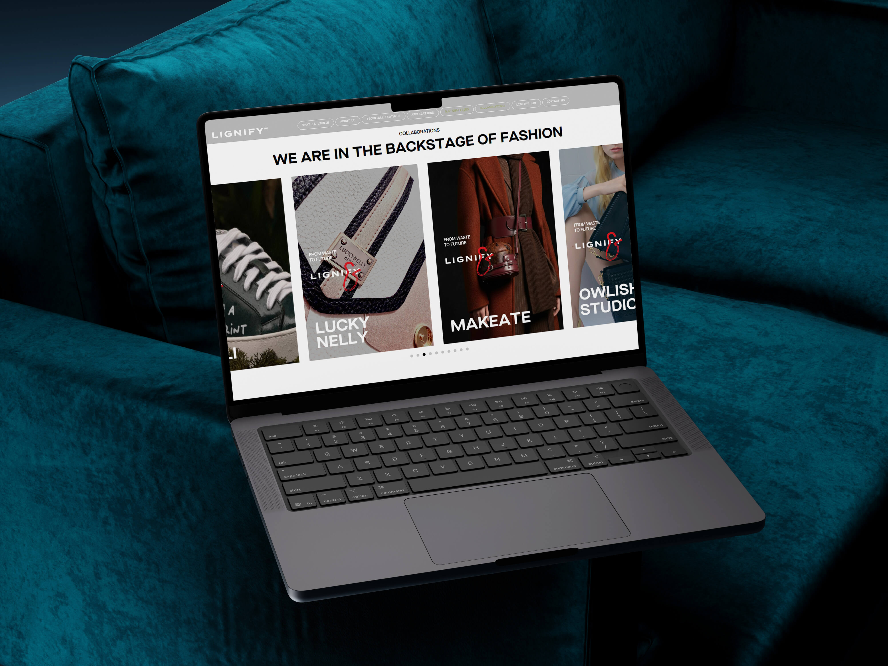

Lignify
web page
UX / UI Designer
2025–2026
Rediseño de la página web de Lignify, una marca de cuero vegano con nueva sede en Barcelona. Buscamos reflejar la innovación de su producto y a la vez un toque moderno y lujoso. Ayudamos a esta marca a posicionarse como una de las principales marcas de cuero vegano en España.
Nuestro mayor reto fue que el cliente entendiera de qué está hecho el material a nivel visual, sin desvelar el proceso ni resultar demasiado técnico y complicado.
